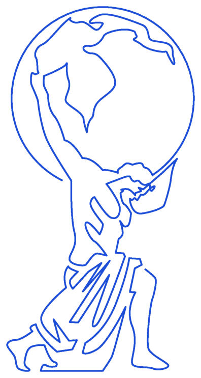

Comme le Titan porte la voûte du monde, Atlas soutient le système d'information des organisations exigeantes — Conseil SI, AMOA, Cybersécurité, Data & IA.

« La transformation n'est pas un fardeau à subir, mais un monde à porter avec méthode, rigueur et savoir. »
Schéma directeur, urbanisation, architecture cible et choix de solutions.
Cadrage, expression de besoin, pilotage de programme, conduite du changement.
Audit, conformité NIS2 & ISO 27001, gouvernance et résilience.
Plateformes data, gouvernance, IA générative et industrialisation.
Comprendre l'enjeu métier, qualifier le besoin, fixer la cible.
Architecture, trajectoire et plan d'exécution activable.
Piloter la mise en œuvre, sécuriser, embarquer les équipes.
Mesurer l'impact, industrialiser, transmettre l'autonomie.
Un échange de 30 minutes pour cadrer votre enjeu.